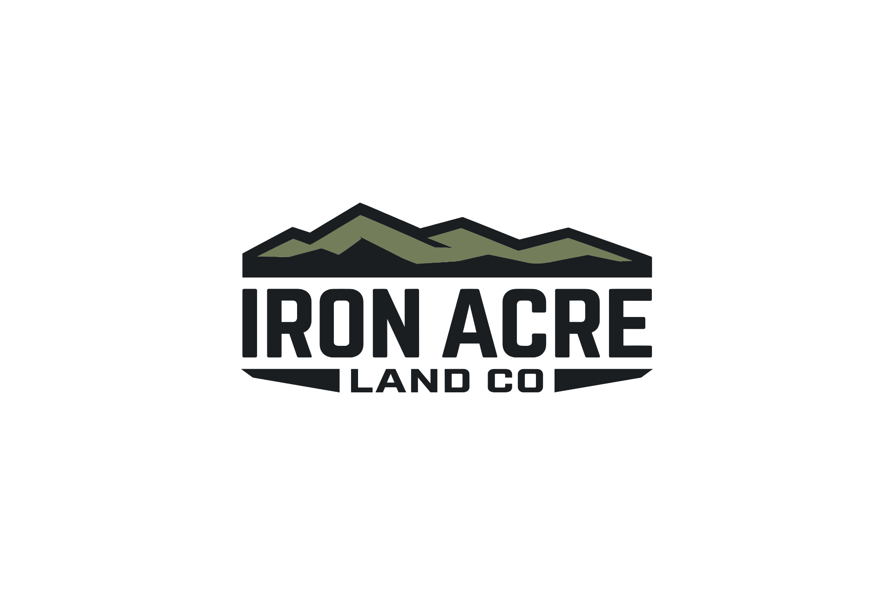
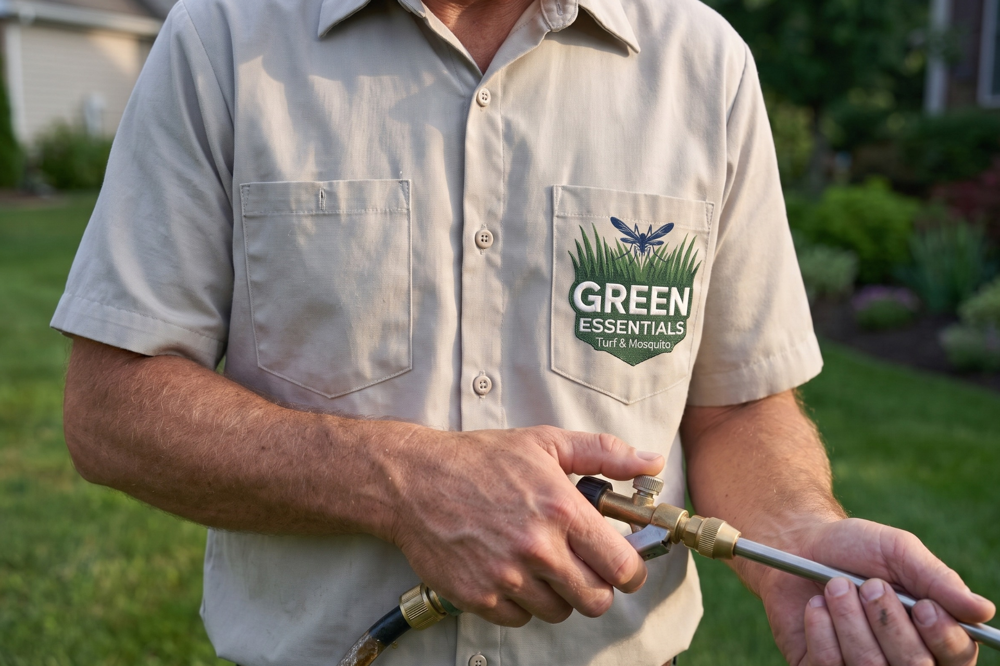

I design
brand identities
illustrations
logos that stand out
websites
design systems
packaging
visual concepts
digital experiences
brands that connect
ondwariobiko
Ikon Trailers.com
Full Brand & Logo Identity Creation

Iron Acre Land Co
Full Brand & Logo Identity Creation

Green Essential Turf and Mosquito
Logo Design
My Services
Made for
your brand
No templates, no shortcuts. Every project is designed around your business and the people you serve.
Logo & Brand Identity
From a standalone logo to a complete identity system: colors, typography and guidelines that keep your brand consistent everywhere.
Illustration
Mascots, characters and custom artwork that give your brand a face and a personality people remember.
Web Design & UI/UX
User-friendly, responsive websites, designed and built from layout to launch, to match your brand on every device.
Custom Projects
Need something else? Tell me what your brand needs and I'll design it around your goals.
350+ projects delivered. More than 10 years of experience.
Logos, brand identities and websites. Designed for businesses of every size.
Selected Clients & Partners
Brands and Organizations I've Worked With


A project, an idea, a question?
ondwariobiko@gmail.com
- Nairobi, Kenya — Available worldwide for remote commissions
- +254 702 255 575
-
Follow: